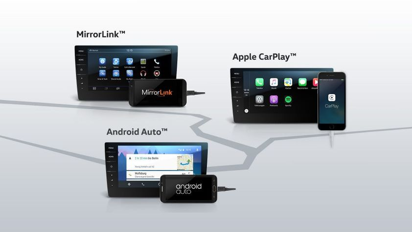
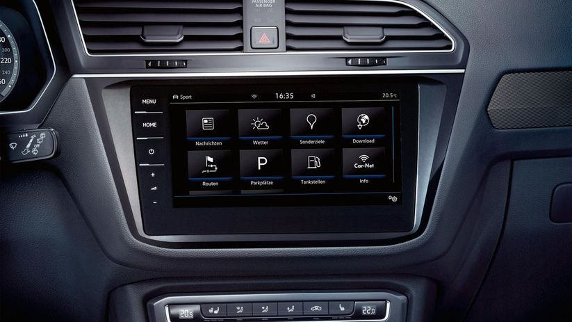
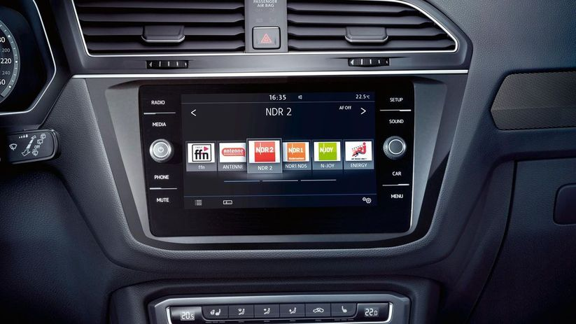

Car-Net App Connect дозволяє легко підключити смартфон до мультимедійної системи Composition Media або навігаційних систем Discover Media та Discover Pro. Таким чином, обрані прикладні програми на вашому мобільному телефоні можуть працювати через сенсорний екран. Але перевага полягає не лише в покращеній зручності користування: численні прикладні програми можуть обробляти інформацію про автомобіль, щоб надавати Вам додаткові корисні або цікаві функціональні можливості.
Інтернет може знадобитися в багатьох життєвих ситуаціях,і в автомобілі також. Наприклад, ви можете слідкувати за поточною ситуацією на дорогах. Це дозволяє планувати або споєчасно змінювати маршрут. Проте онлайн-сервіси Car-Net Guide &Inform пропонують ще більше.
для тих, хто бажає більшого, опціональна навігаційна система Discover Pro пропонує інноваційну функцію управління жестами. Вона дозволяє Вам перемикатися з однієї радіостанції на іншу або ж одним рухом руки змінити системні налаштування в автомобілі, наприклад, інтенсивність підсвітки. Система також має екран з діагоналлю 23,4 см (9,2 дюйма), який здатен відображати чіткі 3D-карти. Також система має вісім динаміків, FM-радіоприймач та CD-привід, який може програвати аудіофайли у форматах MP3, AAC та WMA, два слоти для SD-карт, роз'єми AUX-IN та USB, інтерфейс Bluetooth для мобільних телефонів. Усі пристрої оснащено також diversity-антеною, що забезпечує хороший прийом навіть у складних умовах.
